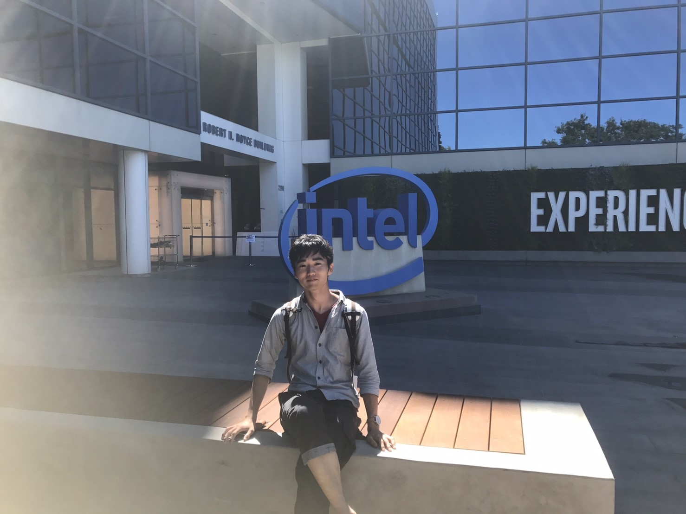

Affiliation
-
Master’s Program in Computer Science
University of Tsukuba Graduate School of Science and Technology Degree Programs in Systems and Information Engineering - IPLAB UBIQUITOUS Team
Society
- ACM student membership
Contact
Publication
Refereed International Conference Papers
-
Takumi Kitagawa, Yuki Yamato, Buntarou Shizuki, and Shin Takahashi.
A Viewpoint Control Method for 360° Media Using Helmet Touch Interface
In Symposium on Spatial User Interaction (SUI '19), Christoph W. Borst, Arun K. Kulshreshth, Gerd Bruder, Stefania Serafin, Christian Sandor, Kyle Johnsen, Jinwei Ye, Daniel Roth, and Sungchul Jung (Eds.). ACM, New York, NY, USA, Article 33, 2 pages -
Yutaro Suzuki, Kodai Sekimori, Yuki Yamato, Yusuke Yamasaki, Buntarou Shizuki, and Shin
Takahashi
A Mouth Gesture Interface Featuring a Mutual-Capacitance Sensor Embedded in a Surgical Mask
Proceedings of 22nd International Conference on Human-Computer Interaction (HCI International 2020), Springer (To appear)
Bachelor thesis
-
Yuki Yamato
Hand Gesture Interaction With a Low-Resolution Infrared Image Sensor on an Inner Wrist
Biography
- [2012.4 - 2015.3] Nishi High School
- [2016.4 - 2020.3] College of Information Science, Science and Technology, School of Informatics, University of Tsukuba
-
[2020.4 - current] Master’s Program in Computer Science
University of Tsukuba Graduate School of Science and Technology Degree Programs in Systems and Information Engineering